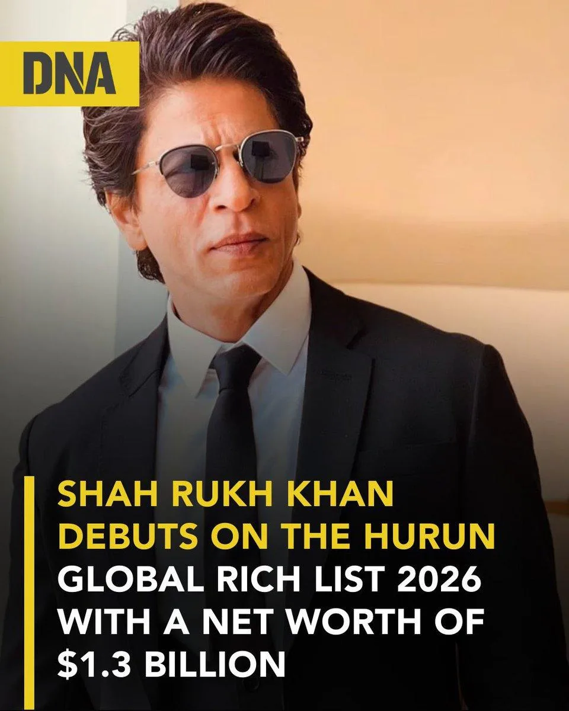

Part VI · The Kingdom by the Geek, 2024 to 2026 · 32 of 57
Chapter 30 · The Ledger
| Date | Measure | Figure | Source |
|---|---|---|---|
| August 2024 | Hurun India Rich List, first entry | ₹7,300 crore | Deccan Chronicle, 30 Aug 2024 |
| 1 October 2025 | Hurun India Rich List, billionaire | about ₹12,490 crore (US$1.4 billion), mainly from his stake in Red Chillies | The Hollywood Reporter India, 6 Oct 2025 |
(Fact. Hurun’s figures are estimates, not audited accounts.) In one year the estimate rose by about 71%. (Fact, arithmetic) The same list put him above Taylor Swift and Arnold Schwarzenegger. (Fact. same source) The company’s own filings show what it earns: in the year to March 2024, Red Chillies Entertainments reported sales of ₹821.6 crore and a net profit of ₹164.6 crore (Fact. Tofler, from Ministry of Corporate Affairs filings). What the fortune is made of matters more than its size: not acting fees, but the company that lost money on its first films and was nearly closed with SRKWorld. The actor of Part I had become the owner. (Analysis)

The M3M Hurun India Rich List 2025: a billionaire. (Image: Final Thesis archive)

Reported debut on Hurun's global list, 2026. (Image: Final Thesis archive)